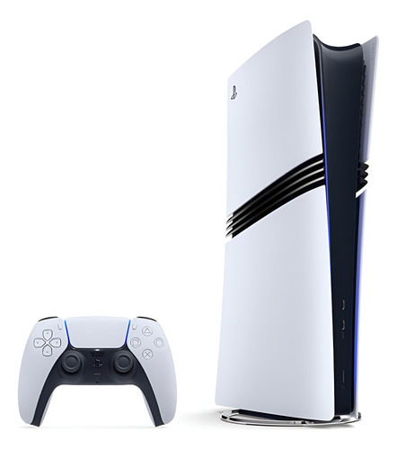

Playstation 5 PRO 2TB c/ 1 controle
- Marca: Sony
- Modelo: CFI-ZCT1W12X
- Resolução: 1440p nativo - 4K
- Ray Tracing: Sim
- FPS: Até 120fps
- Taxa de atualização: 120Hz
- HDR: Sim
- Áudio: Tempest 3D AudioTech2
- Armazenamento: 2TB SSD
- Retrocompatibilidade: Sim, PS4
- WI-FI: IEEE 802.11be WI-FI 6
- Jogos Inclusos: Astro’s Playroom
Preço R$ 5999 a vista
ou até 12x de R$ 599 sem juros
Entrega
Console Playstation 5 Pro Sony
Com o console ps5 pro, os maiores desenvolvedores de jogos do mundo podem aprimorar suas criações com recursos incríveis, como ray tracing avançado, definição de imagem super nítida para tvs 4k e jogabilidade com alta taxa de fps. Com o poder do ps5 pro, os jogos compatíveis podem ser jogados em até 120fps, com ray tracing e resolução 4k aprimorada por ia usando pssr, tudo ao mesmo tempo, na sua tv.
2 tb de armazenamento
Tenha seus jogos favoritos prontos e esperando para você começar a jogar com 2 tb de armazenamento ssd integrado.
Conectividade sem fio online de alto nível
O ps5 pro oferece suporte a recursos aprimorados de internet sem fio com mais largura de banda utilizável para aumentar as velocidades de transferência com ieee 802.11be e seu roteador compatível, o que significa que você pode ter a experiência de latência reduzida e maior estabilidade ao jogar online.
Ps5 promelhoria do desempenho dos jogos e compatibilidade retroativa
O console ps5 pro pode reproduzir mais de 8.500 jogos do ps4. Com o recurso game boost do ps5 pro, você pode aproveitar as taxas de quadros mais rápidas e suaves em alguns dos melhores jogos do console ps4 e ps5!
Informações Técnicas
Características:
- Marca: Sony
- Modelo: CFI-ZCT1W12X
Especificações Técnicas:
- Resolução: 1440p nativo - 4K
- Ray Tracing: Sim
- FPS: Até 120fps
- Taxa de atualização: 120Hz
- HDR: Sim
- Áudio: Tempest 3D AudioTech2
- Armazenamento: 2TB SSD
- Retrocompatibilidade: Sim, PS4
- WI-FI: IEEE 802.11be WI-FI 6
- Jogos Inclusos: Astro’s Playroom
Conteúdo da Embalagem:
- Console Playstation 5 Pro Sony
Garantia do Fornecedor
3 Meses
Itens Inclusos
1 Console Sony Playstation 5 Pro, SSD 2TB, 1 Controle, Branco, 1000046552
Fabricante
Sony
Modelo
CFI-ZCT1W12X
Peso:
5077 gramas (bruto com embalagem)
Código Anatel:
140122113875